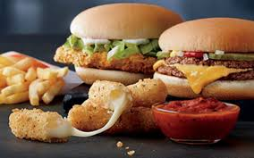

MC DONALD

McDonald's Corporation (McDonald's), incorporated on December 21, 1964, operates and franchises McDonald's restaurants. The Company's restaurants serve a locally relevant menu of food and drinks sold at various price points in over 100 countries. The Company's segments include U.S., International Lead Markets, High Growth Markets and Foundational Markets and Corporate. McDonald's franchised restaurants are owned and operated under various structures, including conventional franchise, developmental license or affiliate. The Company is primarily a franchisor. Under a conventional franchise arrangement, the Company owns the land and building or secures a long-term lease for the restaurant location and the franchisee pays for equipment, signs, seating and decor. The Foundational markets and Corporate segment is engaged in operating restaurants and increasing convenience to customers, including through drive-thru and delivery. McDonald's menu includes hamburgers and cheeseburgers, Big Mac, Quarter Pounder with Cheese, Filet-O-Fish, several chicken sandwiches, Chicken McNuggets, wraps, French fries, salads, oatmeal, shakes, McFlurry desserts, sundaes, soft serve cones, pies, soft drinks, coffee, McCafe beverages and other beverages. In addition, the restaurants sell a range of other products during limited-time promotions. McDonald's restaurants in the United States and many international markets offer a full or limited breakfast menu. Breakfast offerings may include Egg McMuffin, Sausage McMuffin with Egg, McGriddles, biscuit and bagel sandwiches, and hotcakes.
